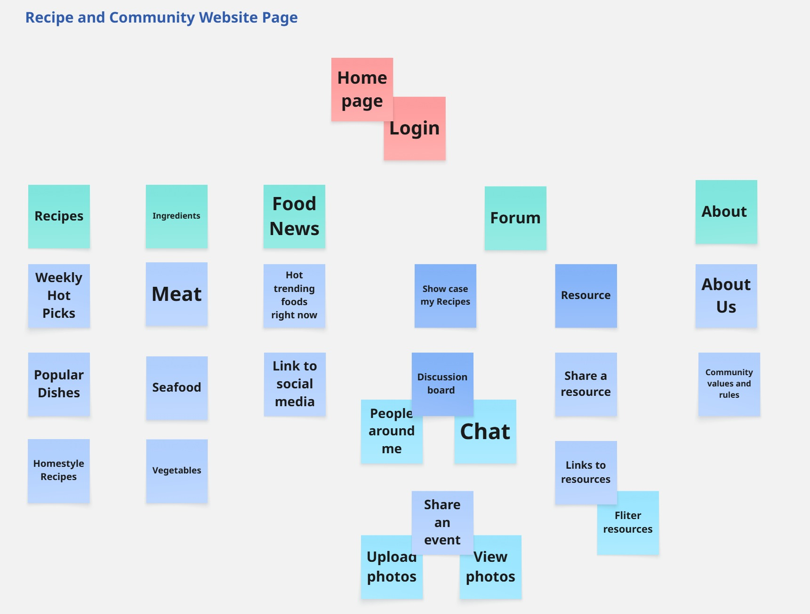

Site Map
This page provides an overview of the site structure for easier navigation.

The website is centered on a Home page with a nearby Login entry, and its content is organized into five main sections: Recipes, Ingredients, Food News, Community, and About. Recipes includes Weekly Hot Picks, Popular Dishes, and Homestyle Recipes, guiding users to explore diverse cuisines. Ingredients is divided into Meat, Seafood, and Vegetables, each linked to related recipes. Food News presents current trends through Hot Trending Foods Right Now and Link to Social Media. The Community section combines Forum, Chat, and Resources, where users can Showcase Recipes, join Discussions, Share Events, and Exchange Resources. About introduces the platform through About Us and Community Values and Rules, also providing a way to report issues. Overall, the structure supports a smooth flow from discovery to interaction and participation.
The homepage serves as the main gateway to the website, designed to attract users and guide them to explore recipes, community posts, and food-related updates. It includes a navigation bar, a hero banner introducing the site, and quick-access sections linking to recipes, news, and the forum. A carousel showcases popular recipes of the week. The navigation menu uses ARIA roles for clear labeling, ensuring screen readers can identify links accurately. Text-to-background contrast meets WCAG 2.2 standards for readability. Visually engaging and easy to navigate, the homepage encourages users to start exploring immediately. A "Get Started" button and simple layout make it accessible to all users, including first-time visitors.
Enables users to securely access their accounts, participate in forums, and upload content. Includes username and password fields, a "Forgot Password" link, and a “Sign Up” redirect button. Layout centers the login form for clear visibility. Form fields include ARIA-labels and focus indicators for keyboard users. Error messages are presented with descriptive text for screen readers. Simple and uncluttered, it prioritizes functionality and clarity. The form's responsive design adapts to mobile and desktop screens, ensuring usability across devices.
Provides users with access to diverse recipes categorized by cuisine, ingredients, and difficulty. Organized as a grid of recipe cards, with filter and sort options on top. Subpages include Weekly Hot Picks, Popular Dishes, and Homestyle Recipes. Recipe cards are labeled with ARIA roles. Each image has alt-text and all buttons are keyboard-operable. Users can browse recipes visually or refine results using filters. Each card displays the dish name, cook time, and difficulty for quick decision-making.
The Weekly Hot Picks page highlights the most popular recipes of the week, helping users follow food trends and find new cooking ideas. It features a clear grid layout showing top dishes, each with images, brief descriptions, and quick links to detailed recipes. ARIA roles and alt text are applied to support screen readers, while high-contrast colors and readable spacing ensure visual comfort. Interactive features such as weekly auto-refresh and bookmark buttons enhance engagement, offering users an enjoyable and accessible browsing experience.
The Popular Dishes page features classic and highly rated recipes that inspire users with trusted cooking options. It adopts a clean card-based layout, where each dish includes an image, brief description, difficulty level, and rating. Accessibility is ensured through ARIA-labeled cards, keyboard-friendly navigation, and clear text contrast. Users can rate, comment, and bookmark dishes, creating a more interactive and community-driven experience while easily discovering reliable and popular meals.
The Homestyle Recipes page offers simple, comforting dishes suitable for everyday cooking. It uses a warm, easy-to-read layout featuring clear images, short introductions, and categorized sections based on cooking time or ingredients. Accessibility is supported through ARIA roles, alt text for images, and strong color contrast for readability. Users can quickly find recipes that match their schedule or preferences, creating a relaxed and familiar browsing experience that reflects the warmth of home cooking.
The Ingredients page introduces a variety of ingredients with information on their uses, nutrition, and related recipes. It features a clean card-based layout where each ingredient includes an image, name, and short description. Accessibility is achieved through ARIA roles, descriptive alt text, and clear category headings that assist screen reader navigation. Users can search or filter ingredients by type or purpose, and each card links directly to suitable recipes—making it easy to learn, explore, and cook with confidence.
The Meat page focuses on a variety of meat-based recipes, featuring dishes that emphasize flavor, nutrition, and cooking diversity. The layout presents recipe cards that include preparation steps, ingredient lists, cooking time, and calorie information. Each image is accompanied by descriptive alt text, while ARIA labels mark interactive elements such as “Cook Now” and “Add to Favorites.” Keyboard navigation is fully supported, ensuring that all users can explore recipes efficiently. The design uses balanced spacing and warm tones to create an inviting experience, helping users discover both traditional and creative meat dishes.
The Seafood page showcases fresh and healthy recipes based on fish and shellfish, encouraging users to explore lighter cooking options. It adopts a clean, grid-style layout with clear categorization by ingredient type or cooking method. Each recipe card includes an image, brief introduction, preparation time, and health-related notes such as protein or omega-3 content. For accessibility, all visual content includes alt text, and ARIA roles are used to distinguish recipe categories for screen reader users. High-contrast typography and focus indicators ensure easy readability and interaction. The overall design evokes freshness and balance, aligning with the theme of ocean-inspired cuisine.
The Vegetables page focuses on plant-based and vegetarian recipes that promote healthy and sustainable eating. The design emphasizes visual clarity, using bright, high-contrast colors and generous spacing to make browsing comfortable. Recipe cards present dish images, key ingredients, cooking steps, and nutritional values such as fiber and vitamin content. Accessibility is ensured through ARIA-tagged sections, readable color combinations, and descriptive captions that enable screen readers to convey full context. Users can filter recipes by dietary type (e.g., vegan, low-carb) or preparation time. This page provides an inclusive experience that appeals to both health-conscious users and those exploring plant-based diets.
The Food News page delivers the latest updates in the culinary world, including trends, seasonal ingredients, and community highlights. It features a structured layout combining image cards and concise summaries, allowing users to quickly browse headlines or dive into full articles. Accessibility is ensured through semantic headings, ARIA-labeled article sections, and alt text for all media content. The high-contrast color scheme and spacious layout enhance readability. Users can filter articles by tags such as "Trends" or "Healthy Eating" and share stories directly to social platforms, making food exploration both informative and engaging.
The Hot Trending Foods Right Now page focuses on viral and widely discussed food topics, offering insights into what's currently popular in dining culture. The layout features highlighted sections for trending dishes, each with an image, summary, and link to detailed coverage. ARIA roles and alt text provide accessibility, while consistent color contrast ensures visibility for low-vision users. Interactive features such as "Why It's Trending" tooltips and weekly updates keep the content fresh and engaging. This page connects users to the pulse of food culture, blending information, entertainment, and community interaction.
The Link to Social Media page connects the website to external platforms, extending community reach and encouraging user participation. It presents recognizable icons for major social networks, each labeled with ARIA descriptions for screen reader accessibility. The layout maintains clear spacing and contrast to enhance usability. Users can share recipes or news directly, view platform-specific food trends, and join cross-platform campaigns. This integration bridges the community and social interaction, promoting active engagement beyond the site itself.
The Forum page provides a space for users to exchange ideas, share recipes, and discuss cooking experiences. It adopts a structured layout divided into thematic sections, enabling users to navigate easily between topics. Accessibility is ensured through ARIA-labeled discussion threads, focus indicators for keyboard navigation, and readable text contrast. Users can create posts, reply to others, or bookmark discussions. The clear hierarchy and interactive design foster active communication and community engagement.
The Showcase My Recipes page allows users to upload and display their culinary creations, encouraging personal expression and recognition within the community. It features a gallery-style layout with recipe cards showing images, titles, and short introductions. ARIA roles identify upload buttons and edit functions, making the page fully accessible via keyboard. Users can like, comment, or bookmark others' recipes, fostering a sense of creativity and community appreciation.
The Discussion Board serves as a platform for community conversations, where users can ask questions, share tips, or discuss food trends. Posts are arranged chronologically with visible author names, timestamps, and reply counters. ARIA labeling distinguishes topics and replies for screen reader users. The layout is intuitive and mobile-responsive, ensuring all users can participate comfortably in discussions.
The People Around Me page introduces a localized feature where users can discover others nearby who share similar cooking interests. It displays profile cards with user names, short bios, and "Connect" buttons. Accessibility is supported by ARIA descriptions for profile images and keyboard navigation for all interactive elements. The design emphasizes safety and privacy while encouraging meaningful connections within the cooking community.
The Chat page enables real-time messaging between users. It includes message threads, input boxes, and quick-action buttons for sending photos or links. Messages are tagged with timestamps and sender names. Accessibility is ensured through keyboard navigation, focus outlines, and ARIA labels for chat controls. The minimalist design provides clarity and speed, fostering smooth and inclusive communication.
The Share an Event page allows users to create, post, and promote cooking-related community events. It features a simple form layout with labeled input fields for event name, time, location, and description. Accessibility is supported through ARIA-labeled fields and focus indicators. Users can preview and edit their posts before publishing. The design encourages participation by making event sharing intuitive and visually clear.
The Upload Photos page provides users with an easy way to share food images within the community. It includes upload buttons, description boxes, and tag selectors. ARIA labels describe each button's function, and progress indicators offer feedback during uploads. Keyboard accessibility and clear focus states ensure usability for all users. This page encourages visual storytelling and community creativity.
The View Photos page allows users to browse and enjoy community photo collections. Images are organized in a responsive grid or slideshow mode, each with descriptive alt text and ARIA-labeled navigation controls. Users can filter by category, zoom in, or bookmark favorites. The high-contrast and minimal design enhances visual comfort while keeping focus on the content.
The Resource page gathers helpful materials such as cooking guides, safety tips, and educational articles. The layout is divided into categories for easy exploration. Each link includes descriptive text, ensuring users understand its purpose before clicking. Accessibility features include keyboard navigation and clear link labeling. The page serves as an information hub for continuous learning and culinary growth.
The Share a Resource page encourages users to contribute valuable learning materials or references. It includes upload options and labeled input fields for title, description, and category. ARIA attributes ensure that all form elements are accessible. Users receive confirmation messages upon successful submission. This design promotes collaboration and shared knowledge within the community.
The Links to Resources page lists external websites and tools related to cooking, nutrition, and food safety. Each link includes a short description and is ARIA-labeled for accessibility. Keyboard users can navigate easily between links. The simple layout and consistent spacing create a clear, user-friendly experience that connects the website to credible external knowledge sources.
The Filter Resources page allows users to quickly locate relevant materials using search and filtering tools. The sidebar provides checkboxes, dropdowns, and keyword input fields-all accessible via keyboard. Filtered results appear in a structured list with clear titles and summaries. Consistent color contrast and spacing ensure readability, helping users efficiently find the information they need.
The About page introduces the overall vision, mission, and structure of the recipe and community website. It provides users with a clear understanding of the platform's goals, development background, and community culture. The layout is divided into concise sections with clear typography and balanced spacing for readability. Accessibility is achieved through ARIA-labeled sections and descriptive navigation links. This page builds trust and transparency, guiding users to further explore the "About Us" and "Community Values and Rules" sections for deeper engagement.
The About Us page presents the team behind the website and the motivation driving its creation. It features profile cards with team member names, roles, and photos, each accompanied by alt text and ARIA labels for accessibility. The page maintains a clean, consistent layout with soft colors and clear hierarchy. Users can learn about the team's background, design philosophy, and commitment to inclusivity. This section strengthens user connection by showing the human side of the project and fostering a sense of authenticity and trust.
The Community Values and Rules page defines the ethical and behavioral standards of the website, ensuring a respectful, inclusive, and supportive environment. The structure divides content into clear sections such as "Respectful Communication", "Content Integrity", and "Safety Guidelines". Each point is written in plain language for clarity and accessibility. ARIA roles and heading tags assist screen reader navigation. This page encourages users to participate responsibly, fostering a positive community culture built on trust and mutual respect.